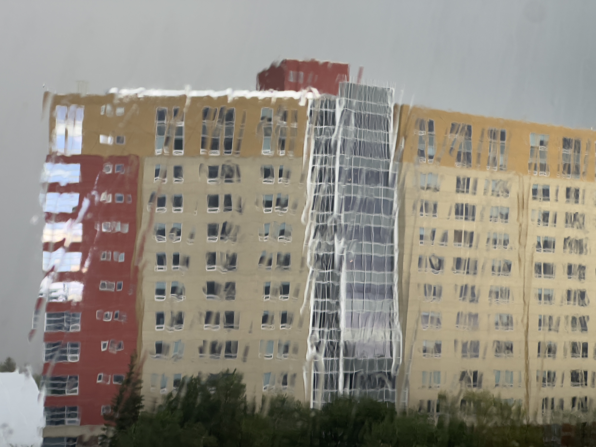
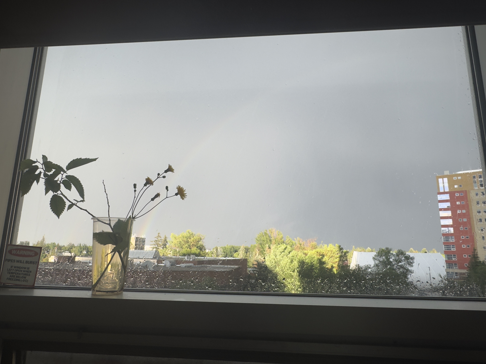

Raining Day after Mom's Visit


I love my mum paying visits, though it messed up my initial plan, leaving more work undone for the summer; it looks like it's just a week, but still, I have to pause on my current crochet pieces, which can be a good thing, cause my tenosynovitis could get worse if I don't force myself to take breaks. Once I get caught in the dorm room and make pieces, I can get so addicted to a degree that I don't even eat or sleep healthily and normally.
The weather was nice during her visit, and the only thing she complained about was that the altitude here is too high, making it hard to breath for her since she has asthma and respiratory problems. She did not like how dry it was here, but to be honest, to be dry and cold is what I can ask for. Picturing humid and warm/sticky weather is something I could not do 🫠...I can wear more for the colder days, but I really couldn't get my skin off me if it's too hot, am I?
One thing I do appreciate is that, before my mum left, she picked flowers and tried to decorate my room with some freshness from the outside. She always knows how homebody I am, so this is one thing she loves to do, which somehow reminds me of, at the end of the day, the crow parents bringing back the shining stuff to the kids who are staying in the nest, to entertain...I guess she wouldn't like that metaphor that much 😈
She used to put flowers 💐🌻🪴 around the house, especially on the lid of the window and on the sealed balcony (like what she did in the pic this time), when we still lived on Xinminbei Street, back at the house, and that was the only period of time when we, at least from my perspective, had a regulated, normal, but peaceful life. I guess we both were more hopeful and could spend time finding small, joyful, but meaningless things back then, including changing the setting of the home frequently, cleaning the house at least once a week, adding tiny new things, whether made or bought, often... I truly miss the good old days, not only because I'm nostalgic but also life felt so much more breathable...